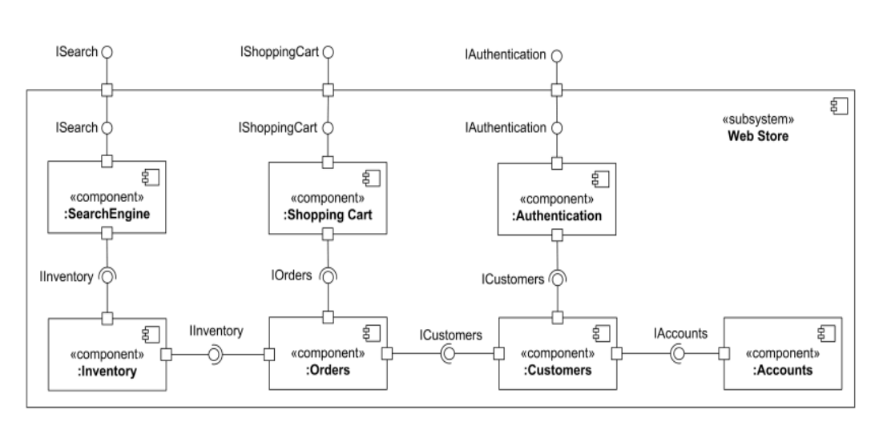
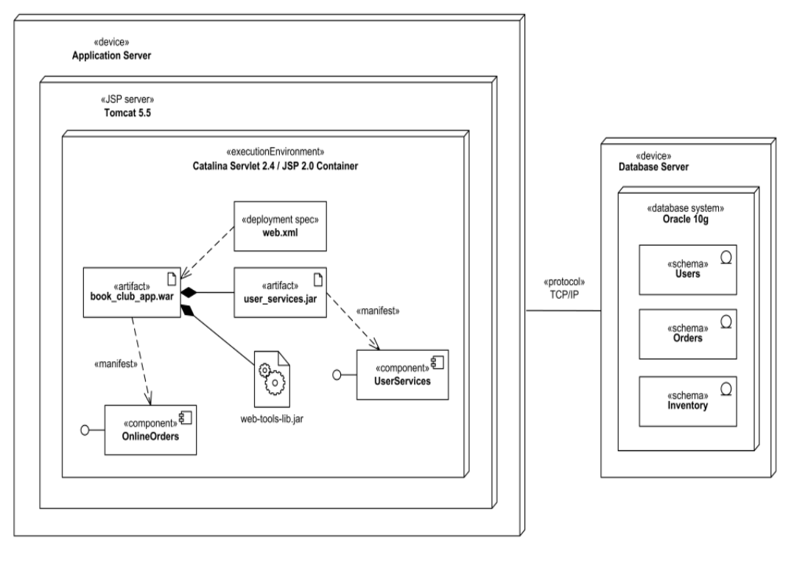

Trường ĐH Công nghệ - Đại học Quốc gia Hà Nội
Giảng viên: Lương Sơn Bá, Nguyễn Tiến Đạt
Class nào tồn tại, object nào là instance, dữ liệu và quan hệ ở mức OOP.
Module nào đóng gói chức năng, artifact nào chạy trên node hoặc container nào.
W6 nâng góc nhìn từ thiết kế lớp lên thiết kế kiến trúc hệ thống.
Phần mềm chia thành module nào?
Phần mềm chạy ở đâu?
| Thành phần | Mô tả | Ví dụ trong hệ thống AI |
|---|---|---|
| Component | Module lớn hoặc thành phần chức năng chính, có thể triển khai riêng. | Frontend, Backend, AI Service, Database, API Gateway, Authentication Service. |
| Interface | Điểm giao tiếp giữa component; gồm provided interface và required interface. | REST API, inference API, auth API, storage API. |
| Subsystem | Nhóm component liên quan thành một hệ thống con để dễ quản lý. | ML subsystem, user management subsystem, data subsystem. |
| Port | Điểm giao tiếp cụ thể của component, dùng để kết nối interface. | HTTP port, gRPC port, model inference endpoint. |
| Relationships | Association, composition, aggregation, constraint, dependency, links. | Frontend phụ thuộc API Gateway; AI Service phụ thuộc Model Store. |
Hình chữ nhật đại diện cho module lớn.
Dịch vụ component cung cấp cho component khác.
Dịch vụ component cần từ bên ngoài.
Điểm giao tiếp cụ thể nơi interface được nối vào.
Hiểu hệ thống ở mức module thay vì từng class nhỏ.
Chia hệ thống thành phần độc lập, dễ thay thế và dễ quản lý.
Thiết kế service boundary, interface và dependency giữa services.
Mỗi nhóm có thể sở hữu một component hoặc subsystem.
Lưu lại kiến trúc module để onboarding, review và bảo trì.
Nhìn rõ phụ thuộc bất hợp lý trước khi triển khai.
| Bước | Việc cần làm | Câu hỏi kiểm tra |
|---|---|---|
| 1. Xác định module lớn | Liệt kê Frontend, Backend, AI Service, Database, Storage. | Module này có trách nhiệm độc lập không? |
| 2. Xác định interface | Ghi rõ dịch vụ component cung cấp hoặc cần dùng. | Component giao tiếp qua API/contract nào? |
| 3. Xác định dependency | Nối component theo quan hệ sử dụng/phụ thuộc. | Dependency có tạo vòng lặp hoặc coupling quá chặt không? |
| 4. Tối ưu kiến trúc | Tách/gộp component, đặt boundary và interface rõ hơn. | Kiến trúc có dễ triển khai, test, thay thế và scale không? |

Web Store gồm SearchEngine, Shopping Cart, Authentication, Inventory, Orders, Customers và Accounts.
| Thành phần | Mô tả | Ví dụ |
|---|---|---|
| Node | Nơi phần mềm chạy hoặc được triển khai. | Server, mobile, browser, cloud VM, Kubernetes node. |
| Artifact | Đơn vị phần mềm được triển khai lên node. | Application, model, database, Docker image, WAR/JAR. |
| Communication Path | Kết nối mạng giữa các node hoặc runtime environment. | HTTPS, TCP/IP, gRPC, message queue connection. |
Server, browser, mobile device, cloud hoặc execution environment.
File/container/model/database được deploy lên node.
Đường kết nối mạng giữa các node, thường ghi protocol.
Component nói API/AI service là module; deployment nói container chạy trên node nào.
| Bước | Việc cần làm | Câu hỏi kiểm tra |
|---|---|---|
| 1. Xác định node | Liệt kê browser, server, mobile, cloud VM, database server, Kubernetes node. | Đây là nơi chạy phần mềm hay chỉ là module logic? |
| 2. Xác định artifact | Đặt application, model, database, Docker image, JAR/WAR vào node phù hợp. | Artifact nào thật sự được deploy? |
| 3. Xác định kết nối | Nối node bằng communication path và ghi protocol nếu biết. | Node giao tiếp qua HTTP, TCP, gRPC hay message queue? |

Deployment diagram nối artifact, execution environment, device và communication path.
| Chi tiết trên hình | Cách đọc |
|---|---|
| book_club_app.war | Artifact được deploy trong Catalina Servlet/JSP Container. |
| Apache Tomcat 5.5 web server | Execution environment chạy bên trong Application Server. |
| OnlineOrders, UserServices | Các component được artifact manifest hoặc embody. |
| Application Server - Database Server | Hai device giao tiếp qua communication path TCP/IP. |
Tập trung vào cấu trúc logic và cách tổ chức của các thành phần phần mềm.
Tập trung vào việc triển khai vật lý các thành phần đó trên node phần cứng hoặc runtime.
| Tiêu chí | Component Diagram | Deployment Diagram |
|---|---|---|
| Mục tiêu | Mô tả cấu trúc phần mềm ở mức cao. | Mô tả triển khai vật lý của hệ thống. |
| Cấp độ | Mức trừu tượng cao. | Mức trừu tượng thấp hơn, gần triển khai thực tế. |
| Tập trung | Tổ chức logic và mối quan hệ giữa các component. | Triển khai phần mềm trên phần cứng và node. |
| Thời điểm | Thiết kế. | Triển khai. |